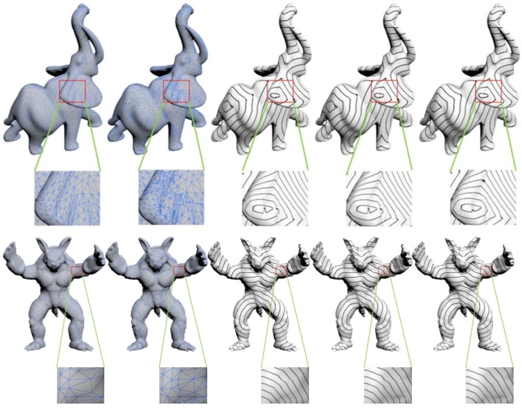
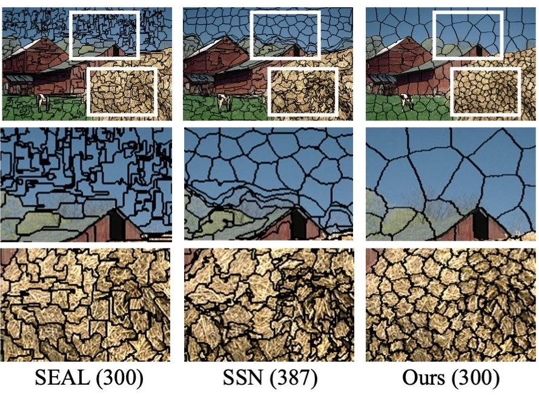

|
上海交通大学计算机系 助理教授 IndexBiography Research Interests Openings Education Working Experience Publications Honors & Awards |

|
Biography Top
Ran Yi is an Assistant Professor at Shanghai Jiao Tong University (SJTU). She is a member of SJTU Digital Media and Computer Vision Laboratory.
She received her Ph.D. degree from CSCG Group, Tsinghua University in 2021, advised by Prof. Yong-Jin Liu. She also closely collaborates with Prof. Yu-Kun Lai, Prof. Paul L. Rosin and Prof. Ying He.
Research Interests Top
Computer Vision, Computer Graphics.
Openings Top
I am looking for self-motivated PhD, master and undergraduate students to join my research group! If you are interested in computer vision, computer graphics and want to join us, please send me your CV via email;)
团队招收博士生，硕士生和对科研感兴趣的本科生！如果你对计算机视觉、计算机图形学感兴趣，希望加入我们团队，欢迎与我邮件联系（邮件请附上你的个人简历）~
Education Top
2016/09–2021/06: PhD, CS Dept, Tsinghua University.
2012/08–2016/07: BEng, EE Dept, Tsinghua University.
Working Experience Top
2021/07–Present: Assistant Professor, CSE Dept, SJTU.
Publications 2021 2020 2019 2018 2016 Top
| 2021 | |
 |
GAN-based Multi-Style Photo Cartoonization
Yezhi Shu*, Ran Yi*, Mengfei Xia, Zipeng Ye, Wang Zhao, Yang Chen, Yu-Kun Lai, and Yong-Jin Liu IEEE Transactions on Visualization and Computer Graphics (TVCG), 2021 [CCF A] [code] |
| 2020 | |
 |
Unpaired Portrait Drawing Generation via Asymmetric Cycle Mapping
Ran Yi, Yong-Jin Liu, Yu-Kun Lai, and Paul L. Rosin IEEE Conference on Computer Vision and Pattern Recognition (CVPR), 2020 [CCF A] [pdf] [code] |
 |
Feature-Aware Uniform Tessellations on Video Manifold for Content-Sensitive Supervoxels
Ran Yi*, Zipeng Ye*, Wang Zhao, Minjing Yu, Yu-Kun Lai, Yong-Jin Liu IEEE Transactions on Pattern Analysis and Machine Intelligence (TPAMI), DOI (identifier) 10.1109/TPAMI.2020.2979714, 2020 [CCF A] [preprint] [code] [demo video] |
 |
Line Drawings for Face Portraits from Photos using Global and Local Structure based GANs
Ran Yi, Mengfei Xia, Yong-Jin Liu, Yu-Kun Lai, and Paul L. Rosin IEEE Transactions on Pattern Analysis and Machine Intelligence (TPAMI), DOI (identifier) 10.1109/TPAMI.2020.2987931, 2020 [CCF A] [preprint] [code] |
|  |
Dirichlet energy of Delaunay meshes and intrinsic Delaunay triangulations
Zipeng Ye, Ran Yi, Wenyong Gong, Ying He, and Yong-Jin Liu Computer-Aided Design (CAD), Vol. 126, 102851, 2020 [CCF B] |
| 2019 | |
 |
|
|  |
Fast Computation of Content-Sensitive Superpixels and Supervoxels using q-distances
Zipeng Ye*, Ran Yi*, Minjing Yu, Yong-Jin Liu, and Ying He IEEE Conference on Computer Vision (ICCV), 2019 [CCF A] [pdf] |
|
An Adaptive Filter for Deep Learning Networks on Large-Scale Point Cloud
Wang Zhao*, Ran Yi*, and Yong-Jin Liu IEEE International Conference on Image Processing (ICIP), 2019 [CCF C] [pdf] |
|
|
StarFont: Enabling Font Completion Based on Few Shots Examples
Xu Yan, Yuntao Wang, Ran Yi, Zhiyu Sun, and Yong-Jin Liu International Conference on Advances in Artificial Intelligence (ICAAI), 2019 |
|
| 2018 | |
|
Delaunay Mesh Simplification with Differential Evolution
Ran Yi, Yong-Jin Liu, and Ying He ACM Transactions on Graphics (SIGGRAPH ASIA), Vol. 37, No. 6, Article No. 263, 2018 [CCF A] [pdf] [slide] |
|
 |
Content-Sensitive Supervoxels via Uniform Tessellations on Video Manifolds
Ran Yi, Yong-Jin Liu, and Yu-Kun Lai IEEE Conference on Computer Vision and Pattern Recognition (CVPR), 2018 [CCF A] [pdf] |
 |
Delta DLP 3-D Printing of Large Models
Ran Yi*, Chenming Wu*, Yong-Jin Liu, Ying He, and Charlie C. L. Wang IEEE Transactions on Automation Science and Engineering (TASE), Vol. 15, No. 3, pp. 1193-1204, 2018 [CCF B] [pdf] [demo video] |
|
Evaluation on the Compactness of Supervoxels
Ran Yi, Yong-Jin Liu, and Yu-Kun Lai IEEE Conference on Image Processing (ICIP), 2018 [CCF C] [pdf] |
|
| 2016 | |
 |
Manifold Differential Evolution (MDE): A Global Optimization Method for Geodesic Centroidal Voronoi Tessellations on Meshes
Yong-Jin Liu, Chun-Xu Xu, Ran Yi, Dian Fan, and Ying He ACM Transactions on Graphics (SIGGRAPH ASIA), Vol. 35, No. 6, Article No. 243, 2016 [CCF A] [pdf] [demo video] |
 |
Delta DLP 3D Printing with Large Size
Chenming Wu*, Ran Yi*, Yong-Jin Liu, Ying He, and Charlie C. L. Wang IEEE/RSJ International Conference on Intelligent Robots and Systems (IROS), 2016 [CCF C] [pdf] [demo video] |
|
RoboDLP: large object 3D printing using robotic arm
Ran Yi, Chenming Wu, Yong-Jin Liu, and Charlie C. L. Wang SIGGRAPH Asia 2016 Posters, Article No. 23, 2016 [CCF A (poster)] |
Honors & Awards Top
- Beijing Outstanding Graduates, 2021.07
Awarded to graduates with outstanding academic performance of the universities at Beijing. - Excellent Doctoral Dissertation of Beijing Society of Image and Graphics (BSIG), 2021.06
- Excellent Doctoral Dissertation of Tsinghua University, 2021.06
- China National Scholarship, Tsinghua University, 2020.12
- China National Scholarship, Tsinghua University, 2019.12
- CCF-CV 学术新锐奖, CCF-CV, 2019.11
- Microsoft Research Asia Fellowship Nomination Award, Microsoft, 2019.11
- China National Scholarship, Tsinghua University, 2018.11
- CCF-CV 学术新锐奖提名, CCF-CV, 2018.10
- Beijing Outstanding Graduates, 2016.06
Awarded to graduates with outstanding academic performance of the universities at Beijing. - Excellent Graduates of Tsinghua University, Tsinghua University, 2016.07
- Excellent Academic Performance Single Scholarship, Tsinghua University, 2015.10
- Excellent Academic Performance Single Scholarship, Tsinghua University, 2014.10